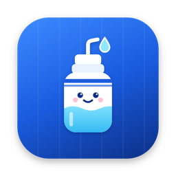

<!doctype html>
<html lang="en">
  <head>
    <meta charset="utf-8" />
    <meta http-equiv="Content-Security-Policy" content="default-src 'self'; script-src 'self'; style-src 'self' 'unsafe-inline'; img-src 'self' data:" />
    <title>Waterboy</title>
    <link rel="stylesheet" href="styles.css" />
  </head>
  <body>
    <div class="app" id="app">
      <aside class="sidebar">
        <div class="sidebar-top"></div>
        <div class="brand">
          
          
        </div>
        <nav class="nav" id="nav"></nav>
        <div class="sidebar-foot" id="sidebar-foot"></div>
      </aside>
      <main class="main" id="main">
        <header class="toolbar">
          <h1 id="page-title"></h1>
          <div class="spacer"></div>
          <button class="icon-btn" id="refresh" title="Refresh" aria-label="Refresh"></button>
        </header>
        <div class="content" id="content"></div>
      </main>
      <!-- After <main>: Electron applies drag regions in document order, so the toolbar (a drag region)
           would swallow clicks on the toggle if it came later. -->
      <button class="icon-btn sidebar-toggle" id="sidebar-toggle" title="Toggle sidebar" aria-label="Toggle sidebar"></button>
    </div>
    <div class="toast-wrap" id="toasts"></div>
    <script src="icons.js"></script>
    <script src="app.js"></script>
  </body>
</html>
